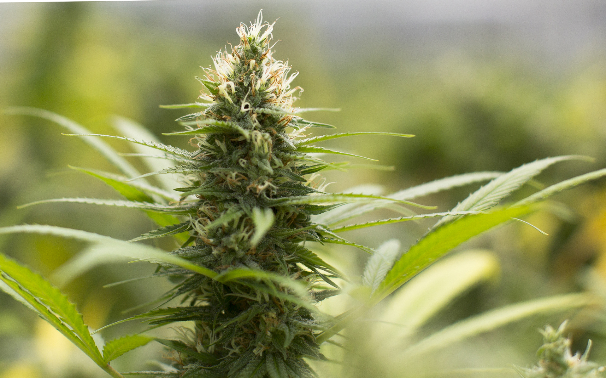
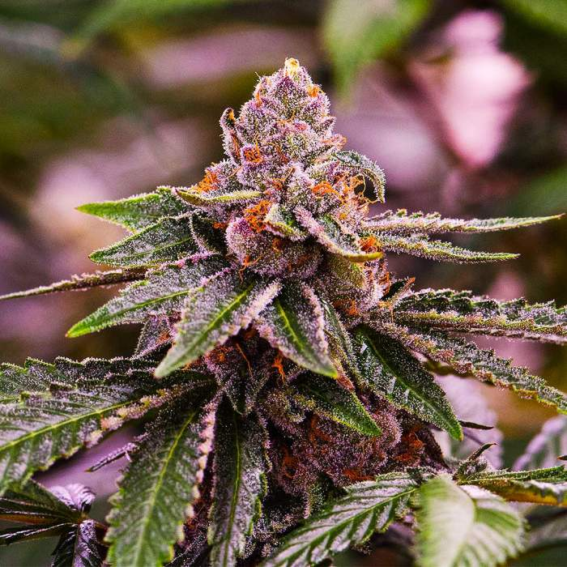
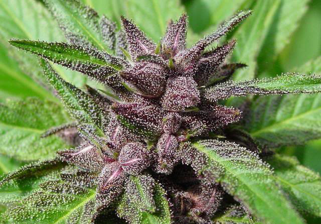

Cannabis that is aimed for morning, daytime and night use
Please contact us if you are interested in any of these types or wish to find out more information.

Sativa
Sativa plants are typically taller with long thin leaves. The bud of a sativa plant is typically less dense and somewhat feathery. Sativa products usually come with a cerebral feeling. Traditionally, sativa strains are more uplifting and euphoric and are recommended for daytime use. Below are some of the ones we sell.
Energy: Green Crack
Euphoric: Sour Diesel
Concentration: Super Lemon Haze

Hybrid
A hybrid is a cannabis plant that is a crossbreed between an indica and a sativa plant. There are very few cannabis strains that are of true indica or true sativa variety. Instead most strains of cannabis are a hybrid of the two. Within this subset there can be indica dominant, and sativa dominant strains. There are also hybrid strains that are a relatively even indica/sativa split.
Energy: Sativa Dominant - Chem Dog
Euphoric: Girl Scout Cookie
Relaxation: Sunset Sherbert

Indica
Indica plants are typically shorter with wide leaves. Buds of an indica plant will usually be dense. Patients will typically find that indica based strains are more relaxing. An indica strain will usually be associated with more bodily sensations. Therefore these strains are often recommended for nighttime use.